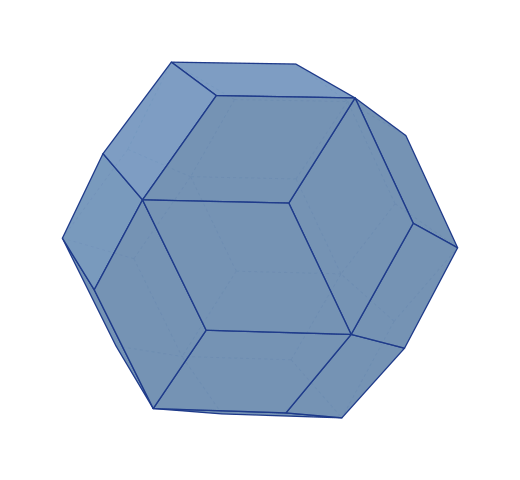
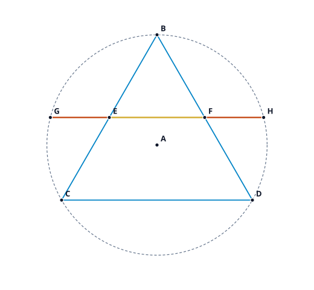

Kepler’s Triacontahedron & Odom’s Section¶
The Thirty Golden Rhombi of the Rhombic Triacontahedron and George Odom’s Tetrahedron Chord
Hic habes triacontaedron rhombicum, figura pulcherrima, cuius triginta bases sunt rhombi aequales, quorum anguli sunt conformes proportioni divinae…
Here you have the rhombic triacontahedron, a most beautiful figure whose thirty bases are equal rhombi, whose angles conform to the divine proportion…
—Johannes Kepler, Strena Seu de Nive Sexangula (Frankfurt, 1611)
Interactive 3D Codex¶
The interactive 3D model below displays Kepler’s Rhombic Triacontahedron, uniting the twenty vertices of the regular dodecahedron with the twelve vertices of its dual regular icosahedron into thirty golden rhombi:
Kepler’s Rhombic Triacontahedron (1611)¶
In his 1611 treatise Strena Seu de Nive Sexangula (A New Year’s Gift of Hexagonal Snow), Johannes Kepler discovered two magnificent rhombic polyhedra: the rhombic dodecahedron (dual of the cuboctahedron) and the rhombic triacontahedron (dual of the icosidodecahedron).

Kepler’s Rhombic Triacontahedron: 32 vertices and 30 congruent golden rhombic faces uniting the dodecahedral and icosahedral duals.¶
The rhombic triacontahedron is a Catalan zonohedron whose topology satisfies:
Vertices: \(V = 32\), consisting of: - \(20\) degree-3 obtuse vertices belonging to the regular dodecahedron; - \(12\) degree-5 acute vertices belonging to the dual-oriented regular icosahedron.
Faces: \(F = 30\) congruent golden rhombi.
Edges: \(E = 60\) congruent edges.
Euler Characteristic: \(V - E + F = 32 - 60 + 30 = 2\).
Exact Geometry of the Golden Rhombus¶
Each of the thirty faces is a planar golden rhombus whose vertices alternate between the degree-3 dodecahedral set and the degree-5 icosahedral set:
Long Diagonal: Joins two opposite degree-5 (icosahedral) vertices:
\[Q_{\text{long}} = 4 \implies \text{Length} = 2\]Short Diagonal: Joins two opposite degree-3 (dodecahedral) vertices:
\[Q_{\text{short}} = 4\phi^{-2} = 4(2 - \phi) = 8 - 4\phi \implies \text{Length} = 2\phi^{-1}\]Diagonal Quadrance Ratio:
\[\frac{Q_{\text{long}}}{Q_{\text{short}}} = \frac{4}{4\phi^{-2}} = \phi^2 = \phi + 1\]Taking square roots confirms that the ratio of the diagonals is the divine proportion:
\[\frac{\text{Length}_{\text{long}}}{\text{Length}_{\text{short}}} = \phi : 1\]Edge Quadrance: In any rhombus, the edge quadrance is one quarter the sum of the diagonal quadrances:
\[Q_{\text{edge}} = \frac{Q_{\text{long}} + Q_{\text{short}}}{4} = \frac{4 + 4(2 - \phi)}{4} = 1 + 2 - \phi = 3 - \phi\]Dihedral Spread: The angle between adjacent rhombic faces is an exact rational invariant in Norman Wildberger’s Rational Trigonometry:
\[s_{\text{dihedral}} = \sin^2(144^\circ) = \frac{5 - \sqrt{5}}{8}\]
George Odom’s Golden Theorem in the Tetrahedron (1983)¶
While the divine proportion is famously intrinsic to the icosahedron and dodecahedron, in 1983 the American artist and geometer George Odom discovered an astonishingly simple golden section hidden within the simplest Platonic solid: the regular tetrahedron.

George Odom’s 1983 construction: connecting midpoints :math:`M_1` and :math:`M_2` of an equilateral triangle inscribed in a circle divides the extended chord in extreme and mean ratio.¶
Axiomatic Formulation¶
Let \(\triangle ABC\) be an equilateral triangular face of a regular tetrahedron, inscribed in its circumcircle \(\mathcal{C}\) of radius \(R = 2\):
Let \(M_1\) and \(M_2\) be the midpoints of sides \(AB\) and \(AC\):
\[M_1 = \left(-\frac{\sqrt{3}}{2}, \frac{1}{2}\right), \quad M_2 = \left(\frac{\sqrt{3}}{2}, \frac{1}{2}\right)\]The line \(M_1 M_2\) is horizontal, given by the constant equation \(y = 1/2\).
Extending the line \(M_1 M_2\) to intersect the circumcircle \(\mathcal{C}\):
\[x^2 + \left(\frac{1}{2}\right)^2 = 4 \implies x^2 = 4 - \frac{1}{4} = \frac{15}{4} \implies x = \pm \frac{\sqrt{15}}{2}\]Thus, the chord endpoints are:
\[G_1 = \left(-\frac{\sqrt{15}}{2}, \frac{1}{2}\right), \quad G_2 = \left(\frac{\sqrt{15}}{2}, \frac{1}{2}\right)\]
Exact Algebraic Proof of the Golden Ratio¶
Let us compute the exact lengths and quadrances along the chord:
Midpoint Segment :math:`M_1 M_2` (Major Segment):
\[\text{Length}(M_1 M_2) = \frac{\sqrt{3}}{2} - \left(-\frac{\sqrt{3}}{2}\right) = \sqrt{3} \implies Q(M_1, M_2) = 3\]Extension Segment :math:`M_2 G_2` (Minor Segment):
\[\text{Length}(M_2 G_2) = \frac{\sqrt{15}}{2} - \frac{\sqrt{3}}{2} = \sqrt{3} \left(\frac{\sqrt{5} - 1}{2}\right) = \sqrt{3} \phi^{-1}\]The quadrance of this minor segment is:
\[Q(M_2, G_2) = 3\phi^{-2} = 3(2 - \phi)\]Total Chord Segment :math:`M_1 G_2`:
\[\text{Length}(M_1 G_2) = \text{Length}(M_1 M_2) + \text{Length}(M_2 G_2) = \sqrt{3} + \sqrt{3}\phi^{-1} = \sqrt{3}(1 + \phi^{-1}) = \sqrt{3}\phi\]The quadrance of the total segment is:
\[Q(M_1, G_2) = 3\phi^2 = 3(\phi + 1)\]Quadrance Ratio Invariants: Evaluating the ratio of the major segment to the minor segment:
\[\frac{Q(M_1, M_2)}{Q(M_2, G_2)} = \frac{3}{3\phi^{-2}} = \phi^2 = \phi + 1\]Evaluating the ratio of the total chord to the major segment:
\[\frac{Q(M_1, G_2)}{Q(M_1, M_2)} = \frac{3\phi^2}{3} = \phi^2 = \phi + 1\]
Taking square roots yields the classic definition of extreme and mean ratio:
Odom’s theorem proves that the divine proportion is not merely an isolated property of pentagonal symmetry, but an organic consequence of the circumcircle of the equilateral triangle and regular tetrahedron.